头发
异国剑士 p06 头发
标题栏是 VRoid Studio 1.22.1 - 摘山梗.vroid*，汉化作者宵夜97。这一集只做头发的形，贴图留到后面。预设套不上这头短发，就把后发、刘海、侧发都画进手绘组，先用几种纯色分开，最后再染回去。滑杆只写画面上读得到的。字幕提到、画面没打开的菜单标成口播。
预设对不上，也不要拆开分类
发型套装先扫一眼
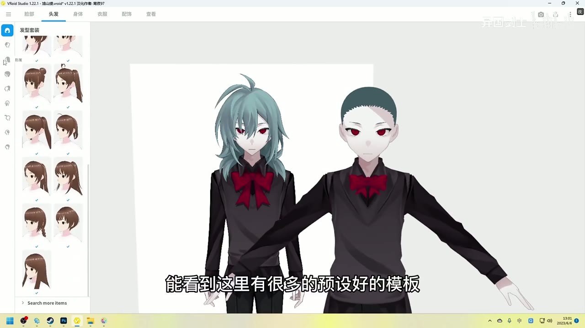
顶栏是脸部、头发、身体、衣服、配饰、查看。头发页先停在发型套装，下面还有 Search more items。左边已经做好的角色是灰青短发、红瞳、黑制服和红蝴蝶结，右边是同一套衣服，头顶只有一层深色短发网，用来跟着做。字幕说合适的话可以直接用模板。这里没有点中某一套当成成品。
不同分类的发片绑不到一起
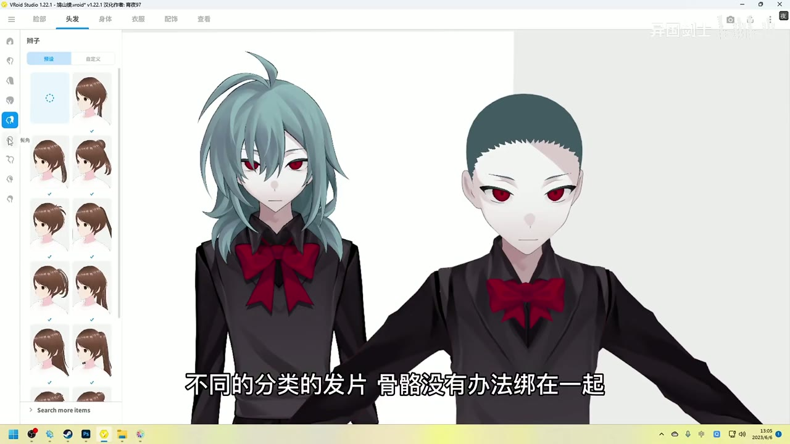
侧栏能切前发、辫子、鬓角这些分类，每一类都有预设和自定义。字幕先说发片是有厚度的，刚开始捏的时候刘海很容易和后面的头发穿模；最底下那层就是后发。因为左边这些分类是分开的，骨骼没有办法绑在一起，所以最后还是把所有头发放在一个分类下做。这一段没有真的去改辫子预设。
基础头发的颜色先改掉
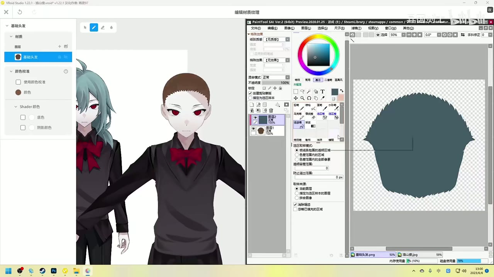
先点到基础头发。编辑材质纹理里，图层一开始还是棕色的头皮 UV，笔刷颜色停在 #333333，笔刷宽度 20，笔刷不透明度 100，编辑模式 UV，图层不透明度 100，绘图模式正常。使用颜色校准没勾。接着窗口切到 SAI，同一块头皮贴图变成立绘那种灰青。底色和阴影颜色保持关掉，免得 Shader 再盖一层颜色。这一段没有读到新的滑杆读数。
从立绘里把后发拆出来
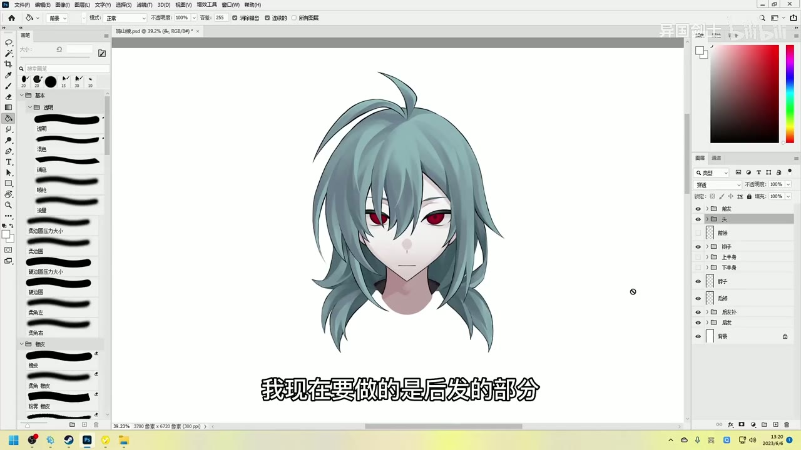
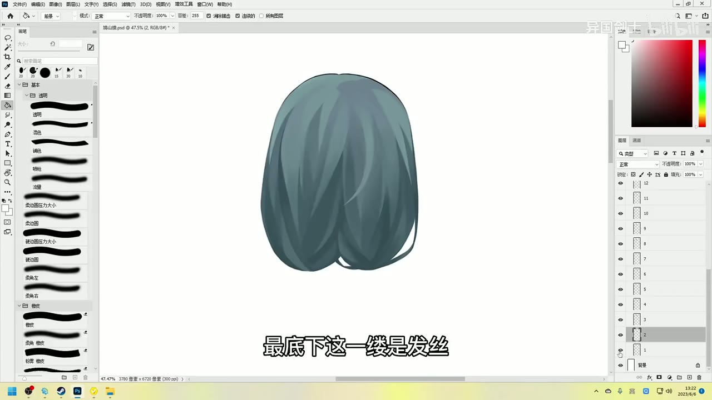
回到立绘原文件，不是 VRoid 的贴图。先把后发这一层单独留下来看。整块后脑摘出来之后，最底下再分出一缕发丝，后面在 VRoid 里就是单独的一笔。字幕说哪一片在最底下已经分好了，要从背后的角度看，先做 2 号发片。
发网先收到后脑
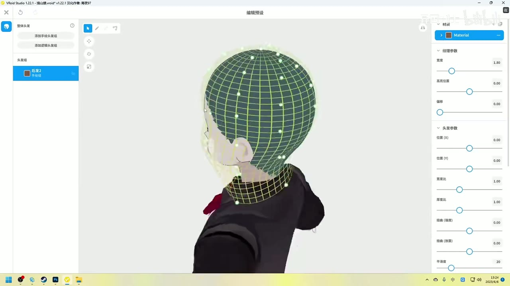
进编辑预设之后，左边是整体头发，两个按钮：添加手绘头发组、添加逻辑头发组。这一集只用手绘组，逻辑头发组没有点开。先选中手绘组 1，再把别的部件和立绘关掉，组名改成了后发 2。选中的是整组，所以右边是宽度比、厚度比，不是单束的宽度、厚度。
头上的黄绿格子就是发网，格子上的绿点可以拖。字幕说拖动就可以修改形状。这一帧发网还罩着整个后脑，宽度比和厚度比都停在 1.00，等于还没缩放。
在这一组里拖出第一束
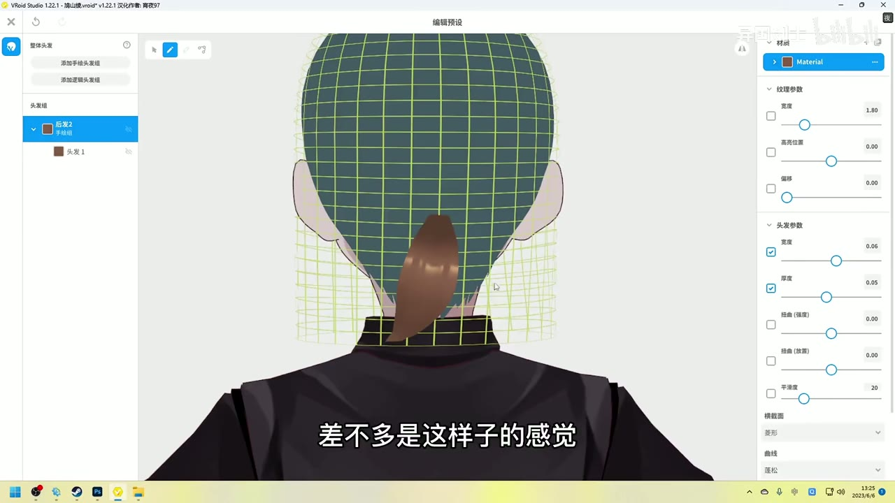
左上角的笔刷还开着，在后脑拖一笔，手绘组里就多出头发 1。字幕说差不多是这样子的感觉。勾上的才作用到这一束：宽度 0.06、厚度 0.05。扭曲两项和平滑度没勾，平滑度仍显示 20。横截面停在菱形，曲线停在蓬松，右下角的图是一道拱。上面那一块是纹理参数，字幕后面会提醒不要和头发参数看混。
发网形状不一样的发丝，不能继续画在这一组里。字幕说要再点添加手绘头发组。同一组里的发束共用这一组的发网。
用锚点把上头收尖
选择工具拖锚点
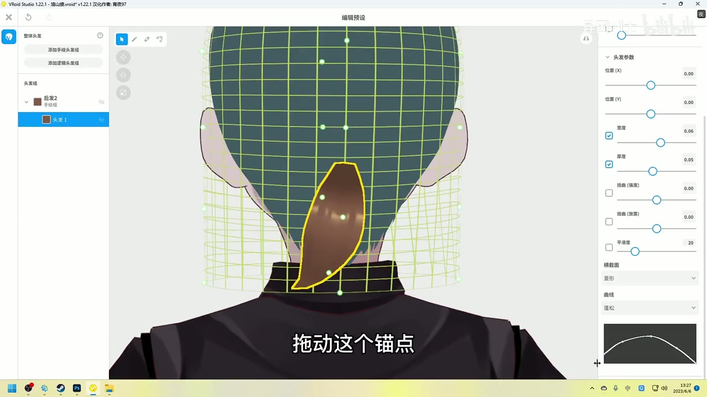
把笔刷换成选择。这一束两头本来都尖，黄边里面有几个点。拖锚点，上头收得更尖，再把左右对称拼到一起。字幕说注意一下，上面改的是纹理参数；这一帧纹理参数已经卷出画面，头发参数还是宽度 0.06、厚度 0.05，横截面菱形，曲线蓬松。形状变尖靠的是锚点，不是这两根滑杆。
宽度、厚度和平滑度
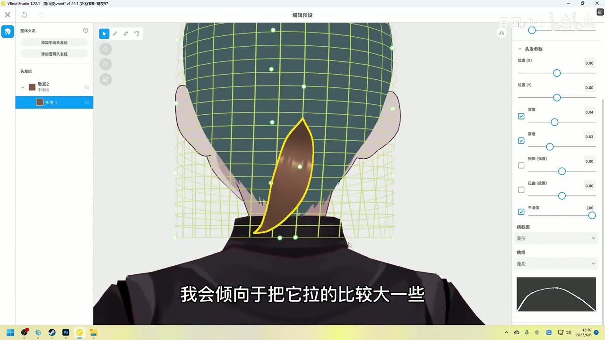
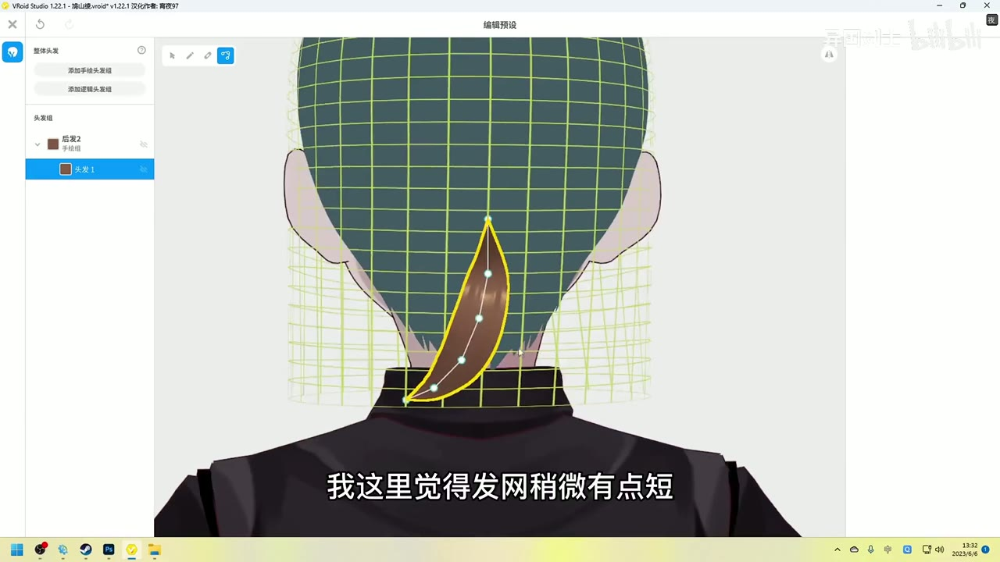
平滑度从 20 拉到 100，字幕说会倾向于把它拉得比较大一些，发束的转折被抹平。宽度收到 0.04，厚度收到 0.03，这一束比刚画出来时细。横截面和曲线没有换，还是菱形和蓬松。
锚点太少就在发束上再点一个，点多了可以右键删，右键菜单这一段没展开，算口播。第四个工具打开后，发束上是一串点，拖它们改走向。字幕同时说发网稍微有点短，发网本身还要再往下拖一点，不然发根盖不住脖子。
默认材质是棕色，改成能区分的纯色
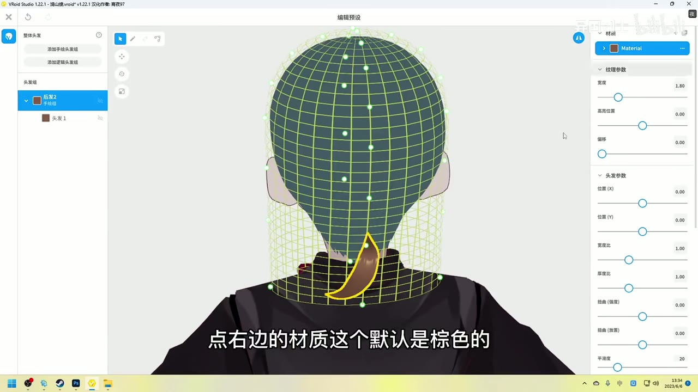
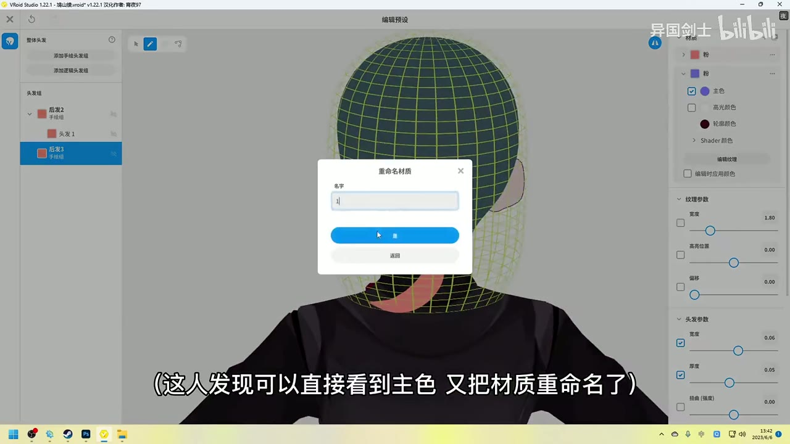
刚画出来的头发是默认棕色，而且自带阴影和高光，叠在发网上不好看穿模。先把颜色改成纯色。材质从 Material 变成粉，发束跟着变成粉色。高光颜色不勾，发束上就没有那条浅纹。编辑时应用颜色也没勾。
重命名窗口这一帧还没填上名字。后面列表里同一排材质都写成 1，靠色块区分，不靠名字。字幕说为了防止穿模，也是先调发网，再改主色。换组之前要在这个手绘组里选一下主色，不然新的一笔还是旧颜色。
另一组发网再画一束
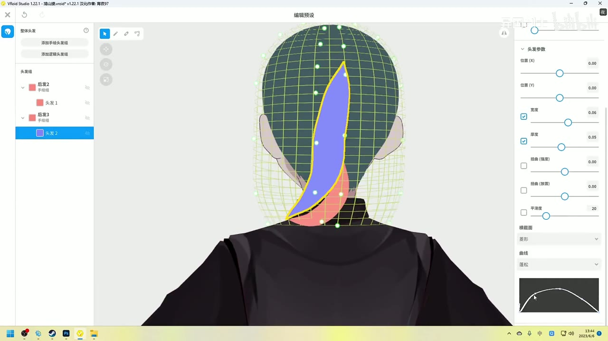
发网形状不同，就再点添加手绘头发组，新组是后发 3。在这一组里再拖一笔，出现头发 2，颜色是另一块紫。两束叠在后脑中线，粉的贴着脖子，紫的盖在上面。新的一束宽度、厚度又回到 0.06 和 0.05。控制点如果太多，字幕说可以右键删掉，菜单没打开。
后面都是同一套：新组、改发网、拖一笔、改锚点和粗细，再换一个纯色。字幕说这是倍速，懒得看可以跳过，只要形状和位置大致出来，不要穿得太过分，之后还会再调一次。分五个颜色就够用了。
后发先铺成一块
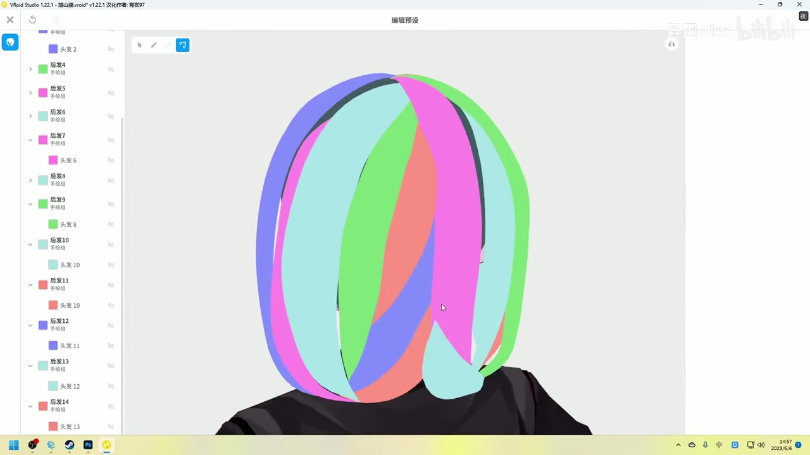
倍速里后发一组组加上去。从背后看，粉、绿、青、紫几束已经接成齐的后脑，发旋那边只是一个抽象的轮廓。字幕说问题不大，之后再调；捏头发比较难一次成型。后脑匀一点发根的空隙也不要紧，上色之后就看不见了。口播还说可以点开官方的三个模型参考，这一段没有打开。
轮廓也是口播。字幕说头发默认有轮廓线，在查看 → 轮廓里设置；开着的话边缘不太精致，平面画风反而适合留着。因为自己的上色比较厚，所以关掉了。画面一直停在编辑预设，查看页没有切过去。字幕接着说别纠结碎发，后发差不多了，这里开的是 30 倍速。
刘海从最底下那层开始
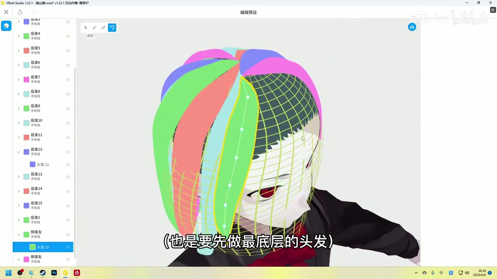
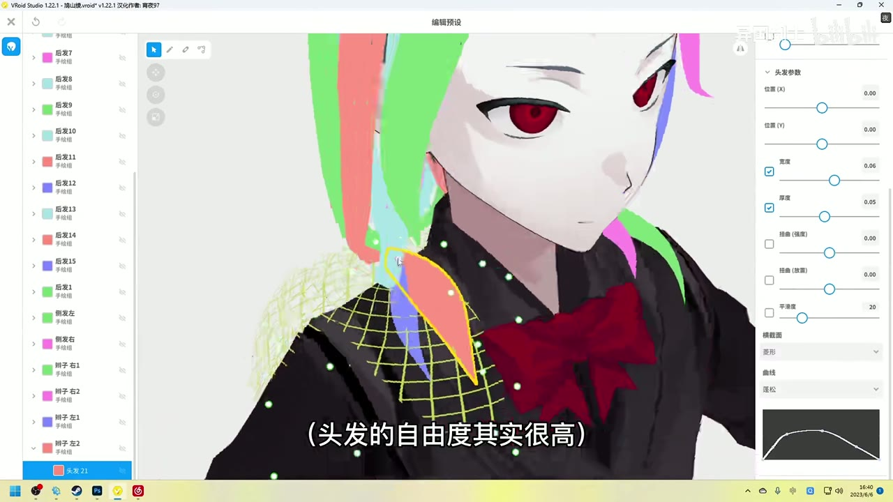
刘海也先做最底层，再往上加。左上角除了选择和笔刷，字幕说还可以移动、旋转、缩放发网。发网拖下来，才能贴到脸颊和脖子，而不是只罩在头顶。
侧发左、侧发右、辫子也各开手绘组。领口前面这一束是头发 21，宽度、厚度又是新笔的 0.06 和 0.05。字幕说头发的自由度很高，还可以拿来捏饰品和兽耳；别的 UP 有更细的教程，链接会放在评论区。评论区这一段没有打开，链接本身没出现在画面上。
刘海收细，再用发网做出呆毛
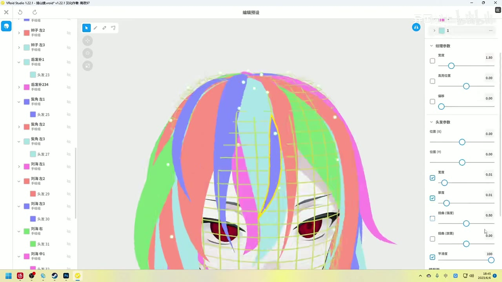
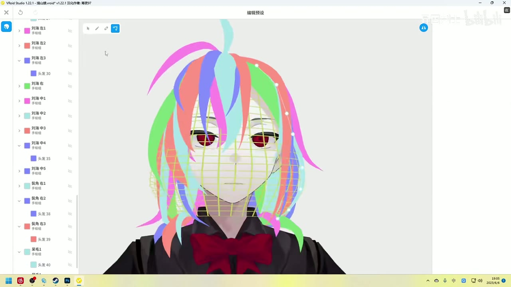
刘海不要用后发那种 0.06。这一束收到宽度 0.01、厚度 0.01，平滑度拉到 100，看起来是贴在脸上的细片。组名按位置分成刘海左、刘海右、刘海中，还有鬓角。
呆毛单独一组，列表里写着呆毛 1。字幕说用旋转后的发网做呆毛。这一帧发网还盖在脸上，头顶已经翘出一根，第四个工具是亮的。口播还说头发的自由度很高，这一步没有再改滑杆。
染回发色，再顺手对一下五官
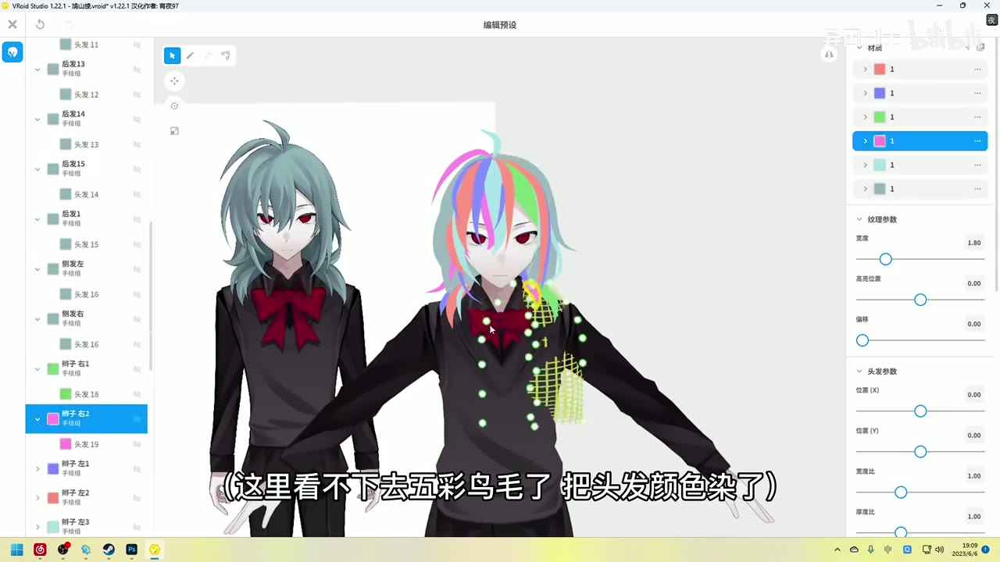
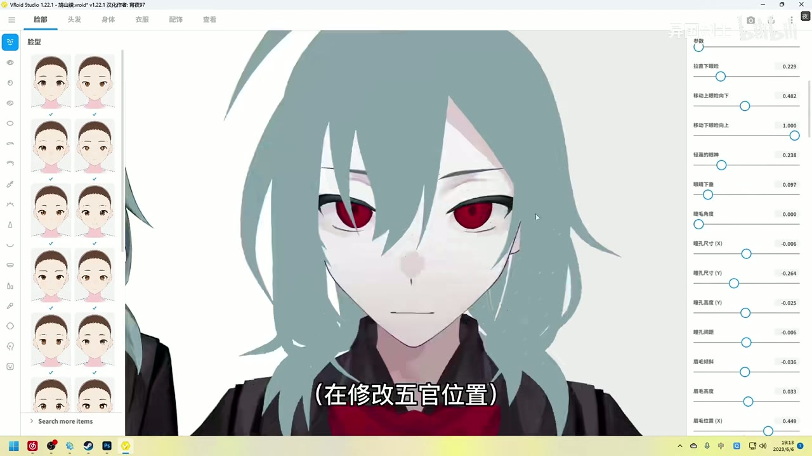
五彩只是用来分开每一束。造型差不多之后，字幕说调整一下整体的比例，比例滑杆这一帧没打开。接着看不下去五彩鸟毛，把头发染回立绘的灰青。左边是已经做好的参考，右边当时还是彩色；染色过程没有逐个打开材质，下一帧头发已经是灰青。
染完切到脸部。字幕说在修改五官位置，右边这列是眼睛和眉毛，读数就是上面那一帧。头发的分组和发网这一段没有再动。